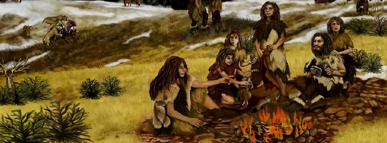
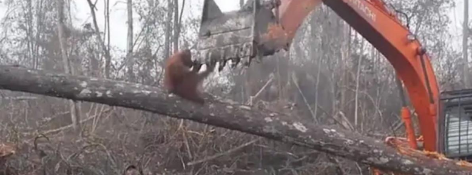
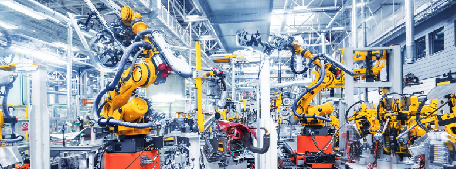

Move forward: to where?
November 16, 2020Where do we come from?
Homo Sapiens from its origins was just another primate in the evolutionary chain belonging to this small blue planet located in the Milky Way, in those times, in order to survive we dedicated ourselves to collecting fruits, being scavengers and fleeing from predators; we were a very vulnerable species, which at first was not different from any other subordinate species in the food chain and at the mercy of nature.
But as we all know, evolution endowed us with fundamental changes in our anatomy, especially with a highly developed brain, that allowed us to have the ability to understand, manipulate the environment and communicate flexibly on a large scale. These capabilities quickly took us to the top of the pyramid of animals. We learned to manipulate fire to cook, to create spears to hunt, to build homes to take refuge and create complicated languages to communicate. All this gave us a strong advantage in relation with other animals, we could get and digest food easily and defend ourselves from other animals attackers without a major problem, which left us free time for other activities, which eventually allowed for specialization and the accumulation of intergenerational knowledge.
Eventually this small population turned into billions of people, primitive tools turned into industrial robots, huts into skyscrapers, tribes into nations, herbs into antibiotics, and fruit pickers into operators of complex production models.
At the same time, local conflicts were transformed into international wars, spears in atomic bombs, horses in war tanks, warriors in soldiers, arrows in drones and a few fruitless trees in vast drylands irretrievable due to soil degradation caused by the bad practices of large-scale agriculture. In the middle of that also emerged many economic doctrines, philosophies, religions, social classes, empires, wars, pacifications, famines, epidemics, scientific discoveries, population expansions, animal extinctions and various technological developments that constitute what we are now as a civilization in this planet.
If history teaches us anything, it is that our life on this small planet is not easy, what can be experienced as progress, can eventually end up being a problem, what seems stable can quickly turn into chaos and what is adversity can turn into an opportunity.
Where are we now?Despite multiple adversities, lot's of suffering, and many times being in the brink of total destruction, we are still here, and not only that, also we have developed societies of millions of people throughout the entire planet, we have made many scientific advances and developed extremely complex artifacts thanks to science and engineering, something that those original Homo sapiens were not capable of even imagining.
We have not only created unimaginable good things, but also we have created unimaginable problems, like persistent issues that we have not been able to solve, others that have worsened a lot, and many other emerging problems that are yet to appear.

Among the persistent problems, although important advances have been made, there is still much to do, and the current systems do not seem to be able to satisfactorily solve these problems, mostly because we are fighting symptoms. Among these problems we find many people with unsatisfied basic needs, the enormous levels of inequality, slavery and human trafficking, persistent epidemics and many other problems that we have not been able to solve.
Among the rapidly worsening problems we find issues such as widespread pollution and climate change, job insecurity, rising unemployment, the growth of xenophobia and intolerance, social polarization, the increase in wars and terrorism, nuclear re-weaponry, mass migrations of people, the depredation of resources and environmental degradation, the mass extinction of species and the growth of psychological diseases, among many others.
We may face future challenges such as technological unemployment, the impact of biotechnology on humans, the application of artificial intelligence in weapons, the resistance of pathogens to antibiotics, possible new pandemics and many other emerging problems that we are not yet able to envision.
If there is something clear between the persistent problems and challenges, about those ones that are getting worse and the emerging ones that are still to come, it is that with the current ideologies and established systems we are not capable of solving them. Given this, it is necessary for us to make many changes of different nature to face them, specially by addressing their root causes, and also be prepared to satisfactorily face those that will appear. Fortunately, when we face adverse situations, opportunities are also born, and as many times in history, today we find that opportunity to create new ideas, organizational models and responses that allow us to face these problems, because if we do not do that, bad consequences are imminent, which many are already here, and others will not take long to appear eventually.
Where do we go?To adapt and give a comprehensive response to various of those problems and create a prosperous future we must reconfigure how we think and how we organize ourselves socially, that is, create a transformation process through new bases of ideas and concrete actions that adapt to these challenges and envision clearly new opportunities for the future.
For this we must leave behind many old ideas, institutions and organizational models that have been a product of the past, that either were oriented to treat old problems or that were simply inertia of past historical processes, which today stagnate us in a vulnerable situation.
This implies that we must create a transition process towards new ways of thinking, acting and organizing ourselves; here consequently we identify some key transitional issues that we embrace together..
From traditional thinking to scientific thinkingWays of thinking are not innocuous, they allow us to configure our frameworks and interpretive models of what happens in reality, that is, about how to understand and have knowledge about what happens in the universe.
Today, we remain largely stuck in very old ways of thinking, such as traditional thinking -like religious, magical or primitivist ways-, or also biased intra-cultural or group thinking, which are clearly not good models to interpret the current reality, and also have become a hindrance to social progress; there are thousands of examples of these, such as the religious opposition to issues such as stem cell research, the frequent intuitive opinion of uninformed people about complex public policy processes, the opposition of pseudo-environmentalists to issues such as transgenic foods, the strains of new age groups that are against science-based medicine and promote pseudo therapies or moral relativist views that justify the cruelty of certain practices such as genital mutilation or racial discrimination.
Our problems, challenges and opportunities require a new way of thinking, one that allows us to understand in the best way how reality works, how to establish cause-effect relations, and also understand -at least partially- the behavior of complex systems. Today we have a knowledge tool that has been very effective in this, that despite an important growth, it still remains marginal in the vast majority of the population; we refer specifically to the scientific method and especially a joint-reflexive way of thinking. In that way science has turned out to be one of the most effective ways of understanding the world, it allows us to predict complex phenomena and apply it to create enormous technological artifacts, something that very few or none of the previous ways of thinking have been effective in doing that.
So in a process of transformation, we have to foster a joint-reflective scientific way of thinking, and consequently displace traditional ways of thinking that hinder progress.
From local to globalSince the beginning of time, societies became more complex due to population growth, the accumulation of knowledge and technological development, which forced the creation of new organizational scales to solve emerging problems. From there we went from groups of few people to tribes, and later to regional communities and recently to the nation-state, which is where we find ourselves today.
Today we face the same situation as our ancestors, the current forms of organization related to the nation-state are not capable of giving an effective response to the global problems that we face today, ones which do not respect borders, such as planetary pollution, climate change, international wars, nuclear weaponization, great intercontinental migrations, control of the application of artificial intelligence in many areas, the challenges of the application of biotechnology or the impact of global economic crisis, among many others. Faced with these problems, nationalists do not have an answer for them, that is why in most cases they simply deny their existence or belittle them.
For this, we need to gradually build and strengthen supranational organizations that comprehensively contemplate society and focus on solving these most urgent global problems, and then move towards a more holistic global form of organization in the long term which will be able to definitively surpass the nation-states. This implies creating a common planetary culture, creating mechanisms for the equitable distribution of resources between regions, and concentrating decisions in some sort of of multi-level and distributed-participatory decision-making system that includes all people and regions of the planet.
From humanism to post-humanismHumanism and anthropocentrism in general have been very effective in displacing other traditional conceptions of how to understand the world, on giving answers to some important ethical questions, and also in giving us models related to how to organize social-organizational systems; this is why it has displaced all previous ways of understanding the world, clearly becoming the best conception for the prosperity of society in the recent past.
But this seems to be changing, multiple advances in scientific knowledge and in technological developments not only put in check several of the anthropocentric-humanist assumptions -such as human exceptionalism, free will or the assumed near-perfect Homo sapiens rationality-, but also the emergence of new problems in which the anthropocentric lenses do not have answers, issues such as the massive manipulation of people, the control of big data, genetic modification of humans, creation of agents and life based on artificial intelligence, the responsibility of autonomous weapons in wars and many other problems that are becoming crucial in the near future.
It's that way that we need new answers belonging to new ways of thinking, ones that incorporate the best of humanism, but that overcome challenges through new interpretative frameworks that can allow us to respond to all these emerging challenges; it is still difficult to know how to approach these new problems, but something that we surely have to do is adopt new post-anthropocentric visions related to post-humanism, system-centered thinking and new decision-making models that can achieve a better social organization related to solve the current and future challenges.
All of this will require long debates within a long time frame of analysis, but now the time has come to start taking on such responsibilities immediately to create new kinds of post-anthropocentric lenses so that all these problems do not surprise us when they arrive, if they are not already here.
From imbalance to sustainabilitySince the appearance of Homo sapiens the environment has been negatively impacted by the presence of us, it’s been that way since the firsts tribes of hunter-gatherers expanded and grew, they unleashed relevant negative environmental consequences where they went; but when large-scale societies emerged, this problem became much worse, especially since the time of the industrial era and the massive demographic growth after that, that had generated extremely negative effects at the global scale, giving birth to this era called the Anthropocene.
To solve the environmental catastrophe ahead, we need to incorporate principles of sustainability and resilience into our way of thinking, as well in our organizations and the responses to the problems we face, like issues such as climate change or land desertification, the massive extinction of species, deforestation and many other symptoms of current imbalance that we are responsible for.
All this requires many things that we need to do, like changing our energy system towards green energy, changing our culture of consumption, promoting the idea of cyclical production and creating systems for the recovery and care of the environment and the beings that cohabit with us in it.
From industrialism to post-industrialismToday we are experiencing a very important transition regarding how we relate to each other, how we produce goods and how we organize society in general, a change similar to the one we experienced in the transition of the agriculture era to the industrial one.
This transition implies an increasing growth of organizational complexity, as also the importance and prevalence of new production models and ways to live related with the emergent post-industrial era, that is characteristic of a predominance of knowledge on the production of goods, a shift from the physical space towards digitization and many other things that embrace us to create new needed structures.
At the macro-organizational level, given the growing organizational complexity, we must gradually abandon old decision-making ways in government and other macro decision level organizations, that implies leaving behind ways to make decisions via pure electoral-party models or technocratic-vertical models that are characteristic of the industrial era. Now we need to develop decision-making systems and processes assisted and coordinated by cybernetics in combination with open participation, which will require the impulse of large-scale technical and scientific organizations, transdisciplinary sectorial decisions and decentralized participation at different organizational scales.
On the productive level, we must leave behind the idea that large-scale homogeneous industrial models are going to provide the means of life to survive and achieve well-being, such as industrial employment or standardized education, which is no longer possible due to advances in complex knowledge systems and automated production. The activities of the post-industrial era are based on highly complex knowledge and the coordination of many people, which will require new heterogeneous ways of learning, a disengagement of means of living with jobs, equitable access of goods and services and many other things alike that can give us abundance for all.
That is, in this post-industrial era, we need to repair our society and seek solutions to the great problems that the industrial era has left us, such as massive pollution, climate change, poverty, enormous inequality, dependence on fossil fuel, inefficient decision-making systems and many other problems and challenges.
How do we get there?All these transitions take time, and they will not have a homogeneous impact on the entire planet, so we need to find ways to make this transition as stable, efficient, distributed and organized as possible.
Regarding the transition from the local to the global scale, it will be necessary for us to gradually create and promote inter and supranational organizations and institutions, oriented to solve urgent problems such as climate change, pollution, socioeconomic inequalities and regional asymmetries, global economic instability, migratory crises and the growing trend towards conflicts and terrorist threats, among many other issues. This will require especially that the most powerful countries allocate resources in the most disadvantaged regions, actions that some actors will play a big role, like political parties, social movements, state institutions, academia and think tanks.
Regarding the transition from imbalance to sustainability, firstly we will need to start promoting a change in culture at a personal and group level that includes a sustainable way of living and the protection of the environment; secondly, we need changes in our economic systems towards cyclical and circular models of production and consumption; and thirdly we need initiatives towards public policies and actions in general related to recover the environmental damage that we have done so far and also build in prevention of future negative impacts. This will require allocating many resources to the dissemination of information and publicity from civil society and public institutions, the legislation of rules around recycling, sustainability standards, the promotion of new mixed economy models, foment research and development around the creation of new sustainable technologies such as renewable energy or non-pollutant transport, among other many necessary things.
Regarding the transition from humanism to posthumanism, there is a need to start promoting post-anthropocentric views in thought-generating circles and institutions, and also find ways to communicate these types of ideas to the general population; all of this implies trying to think and decide around issues such as new systemic theories of reality, genetic modification in humans, incorporation of technology into our anatomy, the development of artificial intelligence related to different areas, and many other related different post-humanist topics.
Regarding the transition from the industrial to the post-industrial era, there is a need to focus forces around changing the macro-decision system, this requires joint action between political parties and social movements on the national, international and supranational scale, which implies forging parties and alliances that can redirect public policies towards a short-term response to urgent problems, and also gradually go towards a reorganization of the current economic system at different scales, that will require action towards encouraging recycling, increasing R+D investment, promoting things such as universal basic and services, and seeking ways to reduce national and global socioeconomic inequality through tax mechanisms, among other possible options.
The way is long, and many adversities and blockers will be faced, but from the short, medium, and long term it is necessary to create and coordinate action around a change that manages to solve current problems and overcome emerging challenges in order to forge a prosperous future for all.